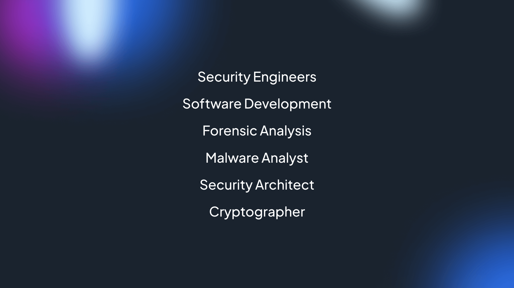

March 25, 2023
What is The Future of Cybersecurity?
Cybersecurity is crucial for the constant evolution of the digital world. Whether you are a business owner or consumer, you must be prepared to adapt to new technologies, rules, and strategies that will help build a safer and more secure online space. Thus, the prevalence of exposed network surfaces forces us to invest in increasingly sophisticated defense systems.
It is impossible to progress in the modern digital world without strengthening your cybersecurity protocols. Data and system protection in a frequently “connected” environment is essential to ensure users, businesses, and governments’ integrity. And with the complexity of security requirements increasing for several reasons, it poses a more significant challenge to develop advanced security systems. Therefore, our continuous defense against hackers and cyber criminals should influence the future of cybersecurity with enhanced data monitoring solutions.
Cloud Computing and Internet of things (IoT)
Cloud computing allows you to transfer data and other computing services (including servers, databases, software, storage, analytics, networking, and intelligence) over the internet, shared not limited to a single device but accessible from several points. For businesses and users, this represents an advantage in terms of efficiency and cost.
However, this technology allows cyber attackers to open a breach that could give them unwanted access. Anyone wishing to harness the enormous potential of cloud computing will therefore need to pay increased attention to their own security. No system is entirely immune to attack, but adopting advanced network visibility solutions dramatically reduces risk.
The same goes for the Internet of Things (IoT) or the network of interconnected devices and interfaces. It is not only smartphones and PCs involved in the network but also the hundreds of sensors and other devices.
The Importance of Cybersecurity
The accelerating cybersecurity threat is overtaking efforts from a defensive perspective.
A cyber attack is characterized by the multiplication of cyber-catastrophes, which is unlikely to occur – except for a possible escalation situation between nations or states. Although it belongs to a specific geopolitical logic, the possibility is frightening, and the outcome could be detrimental.
For example, the economic consequences of cybersecurity risks are increasingly troublesome. It seems that the acceleration of digital transformation would ultimately affect economic growth. The quality network security systems is becoming one of the most critical competitive advantages or disadvantages for companies.
There is a culture growing within cybersecurity that limits the most severe damages of cyberattacks. Companies that have successfully developed defensive solutions may even decide to commercialize them to give access to the public. This new context favors the emergence of secure cyber defense networks, including corporations, public institutions, university research centers, start-ups, private cybersecurity groups, etc.
3 Emerging Technologies Influencing Cybersecurity
Three prominent technologies are emerging due to the digital transformation that continues to highly affect required cybersecurity solutions.
Artificial Intelligence (AI) and Machine Learning
Artificial Intelligence (AI) and Machine Learning will increasingly and continuously influence the evolution of cybersecurity.
Security will invariably evolve in an ever-changing cyber environment. Instead of obeying a specific design, security should become more organic and autonomous, much like our immune system. Ongoing training and adaptation will enable systems to recognize and respond to new threats.
Cyberattack detection becomes more widespread, so IoT ecosystems will rely on AI and machine learning’s line of defense to assess data reliability. The algorithms for processing data from the network sensors will not implicitly trust a single sensor node. Instead, they will seek consensus from surrounding nodes. Machine learning algorithms can continue to evolve to improve spam and malware detection, making it possible to identify fraudulent transactions quickly.
Predictive Defense
As the attacks are becoming more sophisticated, cybercriminals are also starting to concentrate on large organizations, states, and companies. The defenses must therefore try to evolve on a more advanced level.
Predictive defense and control need to be constant. Because, even if we can’t achieve zero-risk security, detecting an attack and intervening in the shortest possible time often makes all the difference. The most crucial weapon lies in “preventive” cybersecurity, which will become “predictive” through its evolution. Defense systems will be able to analyze signals that anticipate an attack. The challenge is indeed complicated and will play out in a fight where artificial intelligence will play a key role. However, we must not forget that the original idea (both the attack and the protection system) will remain human.
Hybrid Cloud
The emergence of new hybrid cloud environments invites a new approach to cyber defense, involving machine learning and autonomous systems in the service of cybersecurity. Organizations tend to move away from traditional security strategies and turn to intelligent SOCs capable of automatically predicting, detecting, avoiding, and responding to threats.
For example, many companies are adopting new cloud environments and switching their applications to SaaS solutions to gain agility, scalability, and operational ease. Thus, new hybrid cloud environments are gradually emerging within the informational system. The abundance of these unique environments encourages us to think about a new approach to cyber defense. Forward-looking organizations are moving away from traditional security strategies and turning to innovative SOCs. These security operations centers aim to automatically predict, detect, avoid and respond to threats automatically. SOCs must also correlate vast amounts of data and extract actionable insights.
Developing A Trustworthy Society
These emerging technologies stemmed from different societal scenarios highlighting the significant factors of cybersecurity evolution. They also show the importance of interactions between multiple data security elements.
Technology in itself will not be the only answer. It must be integrated into more comprehensive defensive approach strategies. Above all, change can only materialize if, at the same time, a society of trust develops in the communities. If consumers feel that a hyperconnected community cannot ensure data protection, technological disruptions will be wiped out.
Takeaway
To protect individual, private, corporate, and government information systems and prevent increasingly sophisticated threats from penetrating, organizations should opt for flexible, intelligent cybersecurity technologies. Artificial intelligence (AI), machine learning algorithms, predictive defense, and hybrid cloud deployments are just a few of the industry’s emerging technologies. Furthermore, security operations centers (SOCs) must also increase current proactive security strategies to address pressing protection issues. These security measures should accelerate the future of advanced cybersecurity protocols for all users.